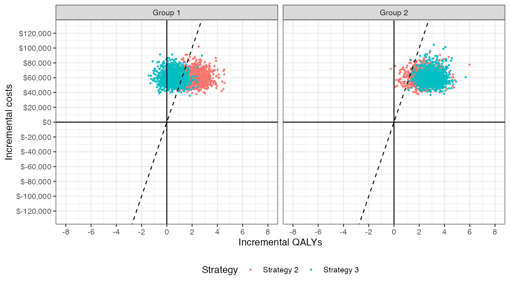
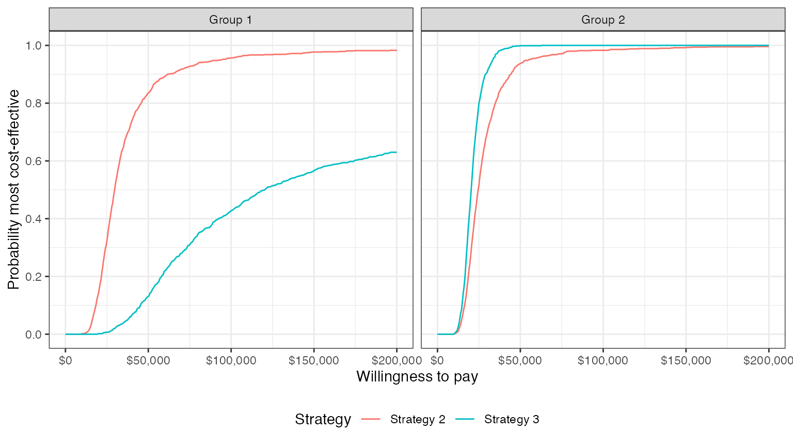
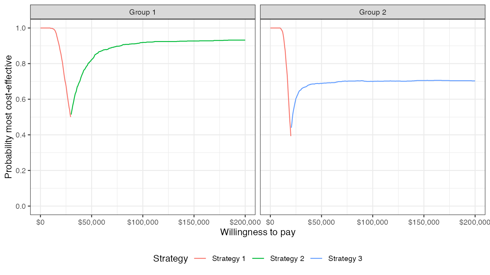
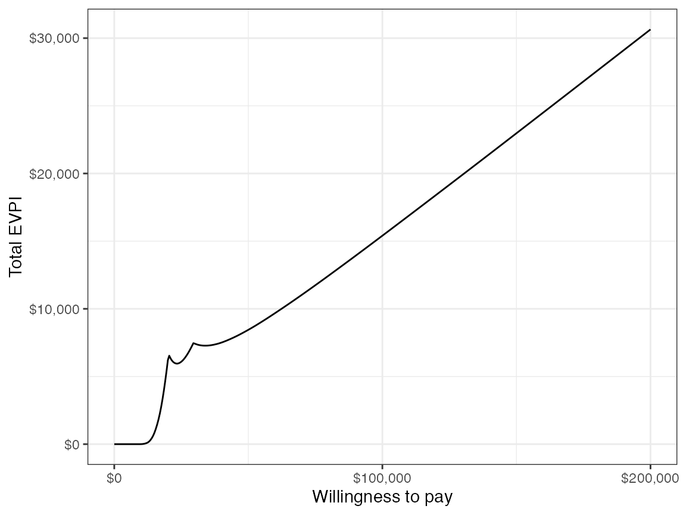

Overview
hesim provides functions for using simulated costs and quality-adjusted life-years (QALYs) from a probabilistic sensitivity analysis (PSA) for decision-analysis in a cost-effectiveness framework, including representing decision uncertainty and conducting value of information analysis. Common metrics that can be produced include the following:
- net monetary benefits (NMBs).
- incremental cost-effectiveness ratios (ICERs).
- cost-effectiveness planes planes.
- cost-effectiveness acceptability curves (CEACs).
- cost-effectiveness acceptability frontiers (CEAFs).
- the expected value of perfect information (EVPI).
Cost-effectiveness analysis (CEA) can be performed for a single target population or for different subgroups. The latter is sometimes referred to as individualized CEA (iCEA).
The rest of this article provides an overview of CEA and how it can be conducted using hesim. The perspective is Bayesian in nature in that it is concerned with estimating the distribution of outcomes rather than just expected values (Baio 2012; Baio and Dawid 2015). It also shows how an iCEA can be performed so that both optimal treatments and the cost-effectiveness of those treatments vary across individuals (Basu and Meltzer 2007; Espinoza et al. 2014).
Framework
Decision theory provides a formal framework for making treatment decisions based on the utility that a therapy provides to a patient population. Decisions are typically made using a net benefit approach grounded in expected utility theory. The optimal treatment strategy is the one that maximizes expected NMBs where expected NMBs are calculated by averaging over the patient population and uncertain parameters \(\theta\). For a given subgroup \(g\) and parameter set \(\theta\), NMBs are computed as the difference between the monetized health gains from an intervention less costs, or,
\[ \begin{aligned} NMB_g(j,\theta) = e_{gj}\cdot k- c_{gj}, \end{aligned} \]
where \(e_{gj}\) and \(c_{gj}\) are measures of clinical effectiveness (e.g. QALYs) and costs in subgroup \(g\) using treatment \(j\) respectively, and \(k\) is a decision makers willingness to pay per unit of clinical effectiveness. The optimal treatment for a given subgroup is the one that maximizes expected NMBs,
\[ \begin{aligned} j^{*}_g = \text{argmax}_j E_{\theta} \left[NMB_g(j,\theta)\right]. \end{aligned} \]
In practice, new interventions are usually compared to a standard treatment often referred to as the comparator. In these cases, a new treatment in a given subgroup is preferred to the comparator if the expected incremental net monetary benefit (INMB) of the new treatment is positive; that is, treatment 1 is preferred to treatment 0 in subgroup \(g\) if \(E_\theta \left[INMB_g\right] > 0\) where the INMB in a particular subgroup is given by
\[ \begin{aligned} INMB_g(\theta) = NMB_g(j = 1, \theta) - NMB_g(j = 0, \theta). \end{aligned} \]
Treatments can be compared in an equivalent manner using the incremental cost-effectiveness ratio (ICER). The most common case occurs when a new treatment is more effective and more costly so that treatment \(1\) is preferred to treatment \(0\) in subgroup \(g\) if the ICER is greater than the willingness to pay threshold \(k\),
\[ \begin{aligned} k > \frac{E_\theta [c_{g1} - c_{g0}]}{E_\theta [e_{g1} - e_{g0}]} = ICER_g. \end{aligned} \] There are three additional cases:
- Treatment \(1\) dominates treatment \(0\) if it is more effective and less costly.
- Treatment \(1\) is dominated by treatment \(0\) if it is less effective and more costly.
- Treatment \(1\) is preferred to treatment \(0\) if it is less effective and less costly when \(k < ICER_g\).
Probabilistic sensitivity analysis
Expected NMBs are expected values, which implies that NMBs are uncertain and that optimal treatment strategies may be selected incorrectly. This uncertainty can be quantified using PSA, which uses Bayesian and quasi-Bayesian techniques to estimate the distribution of NMBs given the distribution of the parameters for each treatment strategy
Since the joint distribution of the model parameters cannot be derived analytically (except in the simplest cases), the distribution of \(\theta\) is typically approximated by simulating the parameters from suitable probability distribution and calculating relevant quantities of interest as a function of the simulated parameters. For each treatment strategy and subgroup, PSA therefore produces \(n\) random draws from the distribution of clinical effectiveness and costs,
\[ \begin{aligned} e_{gj} &= [e_{gj}^1, e_{gj}^2, \dots, e_{gj}^n] \\ c_{gj} &= [c_{gj}^1, c_{gj}^2, \dots, c_{gj}^n]. \end{aligned} \]
Below we simulate costs and QALYs for three treatment strategies and two subgroups (in a real world analysis, this output would be derived from economic models like those supported by hesim). Strategy 1 is the current standard of care; it is the cheapest therapy, but also the least efficacious. Strategies 2 and 3 are equally costly, but Strategy 2 is more effective in subgroup 1 while Strategy 3 is more effective in subgroup 2.
set.seed(131) n_samples <- 1000 # cost c <- vector(mode = "list", length = 6) names(c) <- c("Strategy 1, Grp 1", "Strategy 1, Grp 2", "Strategy 2, Grp 1", "Strategy 2, Grp 2", "Strategy 3, Grp 1", "Strategy 3, Grp 2") c[[1]] <- rlnorm(n_samples, 2, .1) c[[2]] <- rlnorm(n_samples, 2, .1) c[[3]] <- rlnorm(n_samples, 11, .15) c[[4]] <- rlnorm(n_samples, 11, .15) c[[5]] <- rlnorm(n_samples, 11, .15) c[[6]] <- rlnorm(n_samples, 11, .15) # effectiveness e <- c e[[1]] <- rnorm(n_samples, 8, .2) e[[2]] <- rnorm(n_samples, 8, .2) e[[3]] <- rnorm(n_samples, 10, .8) e[[4]] <- rnorm(n_samples, 10.5, .8) e[[5]] <- rnorm(n_samples, 8.5, .6) e[[6]] <- rnorm(n_samples, 11, .6) # cost and effectiveness by strategy and simulation library("data.table") ce <- data.table(sample = rep(seq(n_samples), length(e)), strategy = rep(paste0("Strategy ", seq(1, 3)), each = n_samples * 2), grp = rep(rep(c("Group 1", "Group 2"), each = n_samples), 3), cost = do.call("c", c), qalys = do.call("c", e)) head(ce)
## sample strategy grp cost qalys
## 1: 1 Strategy 1 Group 1 6.808115 7.984456
## 2: 2 Strategy 1 Group 1 6.997936 7.984085
## 3: 3 Strategy 1 Group 1 8.183247 8.221359
## 4: 4 Strategy 1 Group 1 7.423647 8.155250
## 5: 5 Strategy 1 Group 1 7.063846 8.292916
## 6: 6 Strategy 1 Group 1 7.234418 8.066187Decision analysis
For any given willingness to pay \(k\), expected NMBs can be calculated by strategy, subgroup, and parameter sample For example, with \(k=150,000\), a reasonable estimate of the value of a life-year in the United States, Strategy 2 provides the highest expected NMBs in subgroup 2 while Strategy 3 provides the highest expected NMBs in subgroup 2.
ce <- ce[, nmb := 150000 * qalys - cost] enmb <- ce[, .(enmb = mean(nmb)), by = c("strategy", "grp")] enmb <- dcast(enmb, strategy ~ grp, value.var = "enmb") print(enmb)
## strategy Group 1 Group 2
## 1: Strategy 1 1200672 1200323
## 2: Strategy 2 1447770 1509467
## 3: Strategy 3 1215793 1589370A number of measures have been proposed in the health economics literature to summarize the PSA. Below we describe the most common measures, which can be calculated using the functions cea() and cea_pw(). The former summarizes results by taking into account each treatment strategy in the analysis, while the latter summarizes “pairwise” results in which each treatment is compared to a comparator.
Both are generic functions that can be used to summarize results from a data.table containing simulated costs and QALYs or from a hesim::ce object produced from the $summarize() method of an economic model. In this example we use a data.table object.
library("hesim") ktop <- 200000 cea <- cea(ce, k = seq(0, ktop, 500), sample = "sample", strategy = "strategy", grp = "grp", e = "qalys", c = "cost")
The first argument is a data.table that contains columns for the parameter sample (sample), treatment strategy (strategy), subgroup (grp), clinical effectiveness (e), and costs (c). Users specify the names of the relevant columns in their output table as strings. The other relevant parameter is \(k\), which is a range of willingness to pay values to use for estimating NMBs.
Likewise, we can use cea_pw() to summarize the PSA when directly comparing the two treatment strategies (Strategy 2 and Strategy 3) to the comparator (Strategy 1).
cea_pw <- cea_pw(ce, k = seq(0, ktop, 500), comparator = "Strategy 1", sample = "sample", strategy = "strategy", grp = "grp", e = "qalys", c = "cost")
The same inputs are used as in cea() except users must specify the name of the comparator strategy.
Distribution of health and cost outcomes
cea() produces means, 2.5% quantiles, and 97.5% quantiles for costs and efficacy.
print(cea$summary)
## strategy grp e_mean e_lower e_upper c_mean c_lower
## 1: Strategy 1 Group 1 8.004532 7.625347 8.399756 7.427476 6.134231
## 2: Strategy 2 Group 1 10.055709 8.448506 11.642793 60586.499697 45176.893995
## 3: Strategy 3 Group 1 8.510334 7.332195 9.708251 60757.113334 44415.464271
## 4: Strategy 1 Group 2 8.002205 7.597320 8.371528 7.368609 6.135822
## 5: Strategy 2 Group 2 10.467755 8.851752 11.956592 60696.563802 44094.863030
## 6: Strategy 3 Group 2 11.000691 9.725894 12.131825 60733.750804 44985.051180
## c_upper
## 1: 9.034617
## 2: 80647.903901
## 3: 79251.737042
## 4: 8.885084
## 5: 80046.703058
## 6: 82950.291507Other summary statistics can be computed using R packages such as data.table.
## strategy grp median_cost median_qalys
## 1: Strategy 1 Group 1 7.389074 8.007106
## 2: Strategy 1 Group 2 7.336006 8.007338
## 3: Strategy 2 Group 1 59631.933760 10.046966
## 4: Strategy 2 Group 2 60164.995846 10.462405
## 5: Strategy 3 Group 1 60437.497004 8.504607
## 6: Strategy 3 Group 2 59557.552101 11.006864Similarly, cea_pw() produces means, 2.5% quantiles, and 97.5% quantiles for incremental costs and incremental efficacy. The table also contains the ICER, which is equal to expected incremental costs divided by the measure of expected incremental efficacy.
print(cea_pw$summary)
## strategy grp ie_mean ie_lower ie_upper ic_mean ic_lower ic_upper
## 1: Strategy 2 Group 1 2.0511771 0.4379639 3.683574 60579.07 45169.67 80640.24
## 2: Strategy 3 Group 1 0.5058018 -0.7506895 1.718309 60749.69 44408.40 79245.04
## 3: Strategy 2 Group 2 2.4655507 0.8324790 4.060741 60689.20 44087.87 80039.84
## 4: Strategy 3 Group 2 2.9984860 1.7366178 4.187179 60726.38 44977.75 82942.89
## icer
## 1: 29533.81
## 2: 120105.71
## 3: 24614.86
## 4: 20252.35Cost-effectiveness plane
The cost-effectiveness plane plots the incremental effectiveness of a treatment strategy (relative to a comparator) against the incremental cost of the treatment strategy. The plot is useful because it demonstrates both the uncertainty and the magnitude of the estimates. Each point on the plot is from a particular random draw from the PSA.
Data for plotting a cost-effectiveness plane comes from the delta output generated from the cea_pw() function, which, for each sampled parameter set and treatment strategy, estimates differences in costs and QALYs relative to the comparator.
head(cea_pw$delta)
## sample strategy grp ie ic
## 1: 1 Strategy 2 Group 1 1.497467 57687.97
## 2: 2 Strategy 2 Group 1 1.428877 65857.23
## 3: 3 Strategy 2 Group 1 3.184584 44830.68
## 4: 4 Strategy 2 Group 1 1.475885 64228.60
## 5: 5 Strategy 2 Group 1 1.045039 58613.55
## 6: 6 Strategy 2 Group 1 1.303221 45173.35The dotted line in the plot is the willingness to pay line, with slope equal to the value of \(k\). For a given \(k\), points below the line are cost-effective while those above it are not.
library("ggplot2") library("scales") theme_set(theme_minimal()) ylim <- max(cea_pw$delta[, ic]) * 1.1 xlim <- ceiling(max(cea_pw$delta[, ie]) * 1.1) ggplot(cea_pw$delta, aes(x = ie, y = ic, col = factor(strategy))) + geom_jitter(size = .5) + facet_wrap(~grp) + xlab("Incremental QALYs") + ylab("Incremental cost") + scale_y_continuous(label = scales::dollar, limits = c(-ylim, ylim)) + scale_x_continuous(limits = c(-xlim, xlim), breaks = seq(-6, 6, 2)) + theme(legend.position = "bottom") + scale_colour_discrete(name = "Strategy") + geom_abline(slope = 150000, linetype = "dashed") + geom_hline(yintercept = 0) + geom_vline(xintercept = 0)

Cost-effectiveness acceptability curves (CEAC)
Simultaneous comparison
A useful summary measure for quantifying uncertainty is the probability that each treatment strategy is the most cost effective. For a particular subgroup, this is estimated from simulation output as the proportion of simulation draws that each strategy has the highest NMB. For example, consider a random sample of 10 draws from the PSA simulation output and suppose \(k\) is again equal to \(150,000\).
random_rows <- sample(1:n_samples, 10) nmb_dt <- dcast(ce[sample %in% random_rows & grp == "Group 2"], sample ~ strategy, value.var = "nmb") setnames(nmb_dt, colnames(nmb_dt), c("sample", "nmb1", "nmb2", "nmb3")) nmb_dt <- nmb_dt[, maxj := apply(nmb_dt[, .(nmb1, nmb2, nmb3)], 1, which.max)] nmb_dt <- nmb_dt[, maxj := factor(maxj, levels = c(1, 2, 3))]
| sample | nmb1 | nmb2 | nmb3 | maxj |
|---|---|---|---|---|
| 147 | 1226939 | 1572274 | 1520615 | 2 |
| 149 | 1186695 | 1523056 | 1602993 | 3 |
| 276 | 1177908 | 1739458 | 1540879 | 2 |
| 305 | 1236762 | 1389628 | 1536663 | 3 |
| 313 | 1216701 | 1638191 | 1857203 | 3 |
| 484 | 1186281 | 1394045 | 1637345 | 3 |
| 732 | 1138323 | 1319839 | 1745972 | 3 |
| 775 | 1153462 | 1582888 | 1528456 | 2 |
| 810 | 1199256 | 1470751 | 1547010 | 3 |
| 929 | 1186290 | 1126824 | 1558261 | 3 |
mce <- prop.table(table(nmb_dt$maxj)) print(mce)
##
## 1 2 3
## 0.0 0.3 0.7In this example, treatments 1, 2, and 3 have the highest NMBs a fraction 0, 0.3, and 0.7 of the time respectively. The cea() function performs this same calculations for a range of values of \(k\) and all nsims random draws of the simulation output. The output is a tidy data.table which facilitates plotting with ggplot.
ggplot(cea$mce, aes(x = k, y = prob, col = factor(strategy))) + geom_line() + facet_wrap(~grp) + xlab("Willingness to pay") + ylab("Probability most cost-effective") + scale_x_continuous(breaks = seq(0, ktop, 100000), label = scales::dollar) + theme(legend.position = "bottom") + scale_colour_discrete(name = "Strategy")

In group 1, Strategy 2 provides the greatest NMBs with high probability for almost all reasonable values of k. In group 2, the results are less certain, although Strategy 3 provides the greatest NMBs with a higher probability than Strategy 2.
Pairwise comparison
It is also possible to compare each strategy to a single comparator (instead of considering all strategies simultaneously). Output to produce such a plot is generated from the cea_pw() function.
The plot shows that, in subgroup 1, Strategy 2 has larger NMBs than Strategy 1 with very high probability for reasonable values of \(k\). Strategy 3 also has higher NMBs than Strategy 1 with probability over 1/2 for values of \(k\) larger than 120,500. In group 2, both Strategy 2 and Strategy 3 have higher NMBs than Strategy 1 for almost all values of \(k\), although this probability is larger for Strategy 2 than Strategy 3 when \(k\) is smaller.
ggplot(cea_pw$ceac, aes(x = k, y = prob, col = factor(strategy))) + geom_line() + facet_wrap(~grp) + xlab("Willingness to pay") + ylab("Probability most cost-effective") + scale_x_continuous(breaks = seq(0, ktop, 100000), label = scales::dollar) + theme(legend.position = "bottom") + scale_colour_discrete(name = "Strategy")

Cost-effectiveness acceptability frontier (CEAF)
One drawback of a CEAC is that the probability of being cost-effective cannot be used to determine the optimal treatment option. Instead, if a decision-makers objective is to maximize health gain, then decisions should be based on the expected NMB (Barton, Briggs, and Fenwick 2008). The cost-effectiveness acceptability frontier (CEAF), which plots the probability that the optimal treatment strategy (i.e., the strategy with the highest expected NMB) is cost-effective, is appropriate in this context.
A CEAF curve can be easily created by using the best column to subset to the treatment strategy with the highest expected NMB for each willingness to pay value and group.
ggplot(cea$mce[best == 1], aes(x = k, y = prob, col = strategy)) + geom_line() + facet_wrap(~grp) + xlab("Willingness to pay") + ylab("Probability most cost-effective") + scale_x_continuous(breaks = seq(0, ktop, 100000), label = scales::dollar) + theme(legend.position = "bottom") + scale_colour_discrete(name = "Strategy")

Value of perfect information
A limitation of the prior measures are that they ignore the magnitude of cost or QALY gains. A measure which combines the probability of being most effective with the magnitude of the expected NMB is the expected value of perfect information (EVPI). Intuitively, the EVPI provides an estimate of the amount that a decision maker would be willing to pay to collect additional data and completely eliminate uncertainty. Mathematically, the EVPI is defined as the difference between the maximum expected NMB given perfect information and the maximum expected NMB given current information. In other words, we calculate the NMB for the optimal treatment strategy for each random draw of the parameters and compare that to the NMB for the treatment strategy that is optimal when averaging across all parameters. The EVPI for subgroup \(g\) is,
\[ \begin{aligned} EVPI_g &= E_\theta \left[max_j NMB_g(j, \theta)\right] - max_j E_\theta \left [ NMB_g(j, \theta)\right]. \\ \end{aligned} \]
To illustrate consider the same random sample of 10 draws from our simulation output used above.
strategymax_g2 <- which.max(enmb[[3]]) nmb_dt <- nmb_dt[, nmbpi := apply(nmb_dt[, .(nmb1, nmb2, nmb3)], 1, max)] nmb_dt <- nmb_dt[, nmbci := nmb_dt[[strategymax_g2 + 1]]] kable(nmb_dt, digits = 0, format = "html")
| sample | nmb1 | nmb2 | nmb3 | maxj | nmbpi | nmbci |
|---|---|---|---|---|---|---|
| 147 | 1226939 | 1572274 | 1520615 | 2 | 1572274 | 1520615 |
| 149 | 1186695 | 1523056 | 1602993 | 3 | 1602993 | 1602993 |
| 276 | 1177908 | 1739458 | 1540879 | 2 | 1739458 | 1540879 |
| 305 | 1236762 | 1389628 | 1536663 | 3 | 1536663 | 1536663 |
| 313 | 1216701 | 1638191 | 1857203 | 3 | 1857203 | 1857203 |
| 484 | 1186281 | 1394045 | 1637345 | 3 | 1637345 | 1637345 |
| 732 | 1138323 | 1319839 | 1745972 | 3 | 1745972 | 1745972 |
| 775 | 1153462 | 1582888 | 1528456 | 2 | 1582888 | 1528456 |
| 810 | 1199256 | 1470751 | 1547010 | 3 | 1547010 | 1547010 |
| 929 | 1186290 | 1126824 | 1558261 | 3 | 1558261 | 1558261 |
To calculate EVPI, we average NMBs given current information and NMBs given perfect information across simulation draws.
## [1] 1638007print(enmbci)
## [1] 1607540print(enmbpi - enmbci)
## [1] 30467.04The cea() function performs this same calculation across all simulation draws from the PSA and for a number of values of willingness to pay values \(k\). A plot by group of the the EVPI for different values of \(k\) is shown below. The kinks in the plot represent values of \(k\) where the optimal strategy changes.
ggplot(cea$evpi, aes(x = k, y = evpi)) + geom_line() + facet_wrap(~grp) + xlab("Willingness to pay") + ylab("Expected value of perfect information") + scale_x_continuous(breaks = seq(0, ktop, 100000), label = scales::dollar) + scale_y_continuous(label = scales::dollar) + theme(legend.position = "bottom")

We might also be interested in aggregating across subgroups. In particular, the total EVPI can be calculated as a weighted average of the group specific EVPIs,
\[ \begin{aligned} totEVPI &= \sum_{g=1}^{G} w_g EVPI_g, \end{aligned} \] where \(w_g \in (0, 1)\) is a weight denoting that proportion of the population represented by subgroup \(g\) and \(\sum_{g=1}^{G} w_g = 1\).
w_dt <- data.table(grp = paste0("Group ", seq(1, 2)), w = c(0.25, .75)) evpi <- cea$evpi evpi <- merge(evpi, w_dt, by = "grp") totevpi <- evpi[,lapply(.SD, weighted.mean, w = w), by = "k", .SDcols = c("evpi")] ggplot(totevpi, aes(x = k, y = evpi)) + geom_line() + xlab("Willingness to pay") + ylab("Total EVPI") + scale_x_continuous(breaks = seq(0, ktop, 100000), label = scales::dollar) + scale_y_continuous(label = scales::dollar) + theme(legend.position = "bottom")

Value of individualized care
The previous analyses allow NMBs and optimal treatment decisions to vary by subgroup. In contrast, most CEAs estimate the treatment, \(j^{*}\), that is optimal when averaging NMBs over the entire population. In particular, if the population is broken up into \(G\) distinct subgroups, the optimal treatment is given by,
\[ \begin{aligned} j^{*} = \text{argmax}_j \sum_{g=1}^{G} w_g E_{\theta}\left[NMB_g(j,\theta)\right]. \end{aligned} \]
Basu and Meltzer (2007) have shown that selecting subgroup specific treatments increases expected net benefits relative to this one-size fits all approach. They refer to additional net benefit as the expected value of individualized care (EPIC), which can be computed in terms of NMBs using the subgroup approach illustrated here as,
\[ \begin{aligned} \sum_{g=1}^G w_g E_{\theta}\left[NMB_g(j^{*}_s,\theta)\right] - \sum_{g=1}^G w_g E_{\theta}\left[NMB_g(j^{*},\theta)\right]. \end{aligned} \]
We can estimate the value of individualized care as follows:
# Compute total expected NMB with one-size fits all treatment ce <- merge(ce, w_dt, by = "grp") totenmb <- ce[, .(totenmb = weighted.mean(nmb, w = w)), by = c("strategy")] totenmb_max <- max(totenmb$totenmb)
# Compute total expected NMB with individualized treatment itotenmb_grp_max <- apply(as.matrix(enmb[, -1]), 2, max) itotenmb_max <- sum(itotenmb_grp_max * w_dt$w)
# Compute EVIC totnmb_scenarios <- c(itotenmb_max, totenmb_max) names(totnmb_scenarios) <- c("Individualized total expected NMB", "One-size fits all total expected NMB") evic <- totnmb_scenarios[1] - totnmb_scenarios[2] names(evic) <- "EVIC" print(evic)
## EVIC
## 57994.23print(evic/150000)
## EVIC
## 0.3866282Our estimate of the EVIC is $57,994, or in terms of net health benefits, 0.387 QALYs.
References
Baio, Gianluca. 2012. Bayesian Methods in Health Economics. CRC Press.
Baio, Gianluca, and A Philip Dawid. 2015. “Probabilistic Sensitivity Analysis in Health Economics.” Statistical Methods in Medical Research 24 (6): 615–34.
Barton, Garry R, Andrew H Briggs, and Elisabeth AL Fenwick. 2008. “Optimal Cost-Effectiveness Decisions: The Role of the Cost-Effectiveness Acceptability Curve (Ceac), the Cost-Effectiveness Acceptability Frontier (Ceaf), and the Expected Value of Perfection Information (Evpi).” Value in Health 11 (5): 886–97.
Basu, Anirban, and David Meltzer. 2007. “Value of Information on Preference Heterogeneity and Individualized Care.” Medical Decision Making 27 (2): 112–27.
Espinoza, Manuel A, Andrea Manca, Karl Claxton, and Mark J Sculpher. 2014. “The Value of Heterogeneity for Cost-Effectiveness Subgroup Analysis: Conceptual Framework and Application.” Medical Decision Making 34 (8): 951–64.